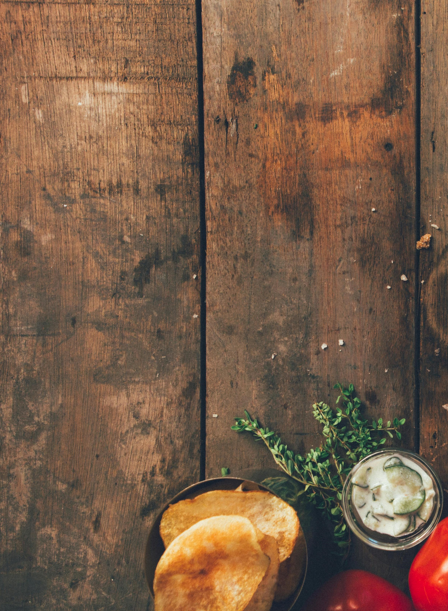

Spaghetti Aglio e Olio
Ingredients:
- 1 pound (450g) spaghetti
- 1/2 cup extra-virgin olive oil
- 6 cloves of garlic, thinly sliced
- 1 teaspoon red pepper flakes (adjust to your spice preference)
- 1/2 cup chopped fresh parsley
- Salt (for pasta water and seasoning)
- Grated Parmesan cheese (optional, for serving)
Instructions:
- Bring a large pot of salted water to a boil. Cook the spaghetti according to the package instructions until al dente. Reserve about 1 cup of pasta water before draining the spaghetti.
- While the pasta is cooking, heat the olive oil in a large skillet over medium-low heat. Add the sliced garlic and red pepper flakes. Cook gently, stirring occasionally, until the garlic becomes fragrant and starts to turn golden. Be careful not to burn the garlic as it can become bitter.
- Once the garlic is lightly golden, remove the skillet from the heat to prevent the garlic from burning. This step ensures the garlic doesn't overcook in the hot oil.
- Once the spaghetti is cooked, drain it and add it to the skillet with the garlic and oil. Toss the pasta gently to coat it evenly with the garlic-infused oil.
- If the pasta seems dry, add some of the reserved pasta water a little at a time to help create a light sauce that coats the spaghetti. The starch in the pasta water will help bind the sauce together.
- Add the chopped parsley to the pasta and toss to combine. Season with salt to taste.
- Serve the Spaghetti Aglio e Olio immediately. You can garnish individual servings with grated Parmesan cheese if desired.